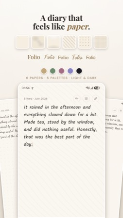
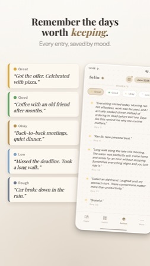

What happened
on Tuesday?
The details go quickly. Write them down while you still remember who said what.
Pages keeps dated entries with mood and habit marks. Write a sentence or keep going. You can choose paper styles and fonts that suit the way you write.
Start a notebook ↗
A photo of the meal. A voice note with the sound you wanted to keep.
New photo and voice attachments are optional Plus features. See what's included.There's a to-do list for the things you still need to do, too.
Some thoughts need a different page.
A reflection prompt can help when you don't know where to begin. Or write an unsent letter: to someone else, to yourself, about something you haven't found the words for yet.
Keep it in your Archive when you want to return to it.
Try a question from the blog ↗Dear future me,
Did we ever go back
to that bookshop?
- Mon•
- Tue•
- Wed—
- Thu•
- Fri—
- Sat•
- Sun•
Illustrative habit marks, not an app screenshot
Read the week
alongside the words.
Rhythm shows activity in a curve and calendar. Your entries can remind you what else was happening on those days.
In Pause, Oli offers local pattern observations with evidence you can inspect or disagree with. An observation can give you a question to follow; it doesn't have to be your conclusion.

You remember the place.
What was the day like?
Browse Moments, follow a tag or bookmark, or search for the detail you remember. You might find something you'd forgotten to look for.
If you've been away, start with today. You can also keep one note across the days between visits.
Why keep words with a mood mark? ↗Write your first entry.
Core writing works offline, without a Zolio account.